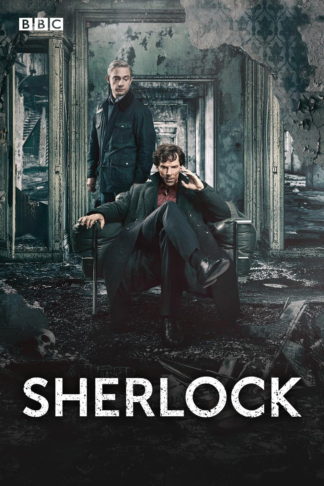

Scherlock
More Information
See this movie on IMDbSummary:
"Sherlock" is a British television series that premiered in 2010. The show is a modern-day adaptation of Sir Arthur Conan Doyle's classic detective stories featuring Sherlock Holmes and Dr. John Watson.
Set in contemporary London, the series follows the brilliant and eccentric consulting detective Sherlock Holmes, portrayed by Benedict Cumberbatch, and his loyal friend and biographer, Dr. John Watson, played by Martin Freeman.
Together, Sherlock and Watson solve complex and seemingly unsolvable crimes using deductive reasoning, keen observation, and cutting-edge technology. The show also explores the evolving relationship between the two protagonists and the impact of their adventures on their personal lives.
Each episode of "Sherlock" is a standalone story, with an overarching narrative that ties the series together. The show's clever writing, sharp wit, and captivating performances by Cumberbatch and Freeman have made it a critical and commercial success.
"Sherlock" has been praised for its modern take on the beloved characters, its innovative storytelling, and its ability to captivate both longtime Sherlock Holmes fans and new audiences alike. The series has received numerous awards and accolades, solidifying its place as one of the most acclaimed and beloved adaptations of the iconic detective duo.